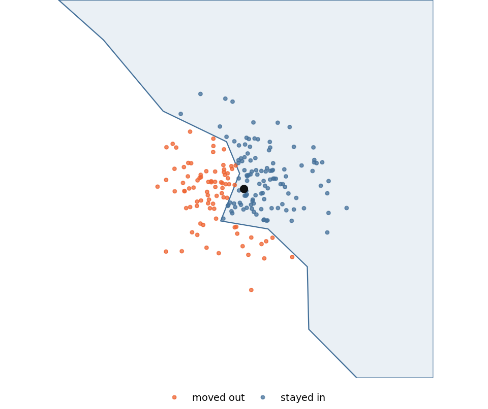

library(dplyr)
library(tibble)
library(purrr)
library(glue)
library(cli)
library(parallel)
library(sf)
library(ggplot2)
catchment_panel <- readRDS("catchment_panel.rds")
catchments <- readRDS("catchments.rds")
overflows <- readRDS("overflows.rds")
source("R/setup.R")
n_cores <- wq_cores()When the simulation carries the geometry
Stage six: the resample that cannot leave the polygons behind
Draft. The code runs and the argument holds; the prose has not been copy-edited.
The second simulation, and the one where the previous page’s answer stops working. The difference is one property, and everything else follows from it.
What makes this one different
In Simulating from a summary the spatial work happened once, before the repeats started, and the repeats ran on a table of numbers. Here the spatial work is inside every repeat, so it cannot be hoisted out and done once.
The test, which is what transfers: if every iteration perturbs something the spatial operation depends on, the spatial operation is in the loop. If it does not, it is not, and it belongs above the loop where it is cheap.
The design
Resample the catchments with replacement, jitter each overflow point by an assumed positional error, and count how many points fall inside a polygon. Per resample, seeded on the resample id. Each resample returns two numbers: how many outfalls landed in some catchment, and the mean number of catchments each one landed in.
The jitter deserves its own sentence, and it should be honest about being a design decision rather than a discovery. It represents assumed positional uncertainty in the outfall locations, and it is also what keeps the point-in-polygon genuinely inside the loop. Without it the geometry is identical on every iteration and the whole thing collapses into a single query answering a different question.
Fifty metres sounds too small to matter until you look at an outfall that sits near a catchment boundary. This one is 14 m from the edge, and the cloud is 200 jittered positions of that single point: most stay inside the catchment and a substantial minority land outside it, so which catchment it counts towards is decided by the jitter rather than by the record.
# jitter_m is set again with the unit of work below; this figure needs it
# early, and the two must agree.
jitter_m <- 50
focus_polygon <- catchments |>
filter(water_body_id %in% catchment_panel$water_body_id) |>
select(water_body_id) |>
slice(156)
# The outfall closest to the boundary, because that is where 50 m of
# jitter can change the answer.
in_focus <- overflows |>
filter(lengths(st_within(overflows, focus_polygon)) > 0)
to_edge <- st_distance(in_focus, st_boundary(focus_polygon))
focus_point <- in_focus |> slice_min(as.numeric(to_edge), n = 1)
focus_xy <- st_coordinates(focus_point)
jitter_cloud <- map(1:200, \(r) {
set.seed(r)
tibble(
X = focus_xy[1] + rnorm(1, 0, jitter_m),
Y = focus_xy[2] + rnorm(1, 0, jitter_m)
)
}) |>
list_rbind() |>
st_as_sf(coords = c("X", "Y"), crs = 27700)
jitter_cloud <- jitter_cloud |>
mutate(inside = lengths(st_within(jitter_cloud, focus_polygon)) > 0)
window <- focus_point |> st_buffer(260) |> st_bbox()
ggplot() +
geom_sf(
data = st_crop(st_geometry(focus_polygon), window),
fill = "#EAF0F5",
colour = "#447099",
linewidth = 0.4
) +
geom_sf(
data = jitter_cloud,
aes(colour = inside),
size = 0.9,
alpha = 0.75
) +
geom_sf(data = focus_point, colour = "#111111", size = 2.2) +
scale_colour_manual(
values = c("TRUE" = "#447099", "FALSE" = "#EE6331"),
labels = c("TRUE" = "stayed in", "FALSE" = "moved out"),
name = NULL
) +
coord_sf(
crs = 27700,
datum = 27700,
xlim = window[c("xmin", "xmax")],
ylim = window[c("ymin", "ymax")],
expand = FALSE
) +
theme_void(base_size = 9) +
theme(legend.position = "bottom")
Most outfalls are nowhere near a boundary and the jitter does nothing to them. Across a whole resample of this catchment’s 39 outfalls, fewer than one crosses on average. That is the honest size of the effect: small, real, and inside the loop.
Two things that are not findings about water
This is where the disclaimer has to be loudest, because the page produces counts and a count looks like a measurement.
The jitter radius is assumed and the resampling design is invented, so the spread across resamples describes those two choices rather than anything about outfalls. The numbers exist to prove that the mechanism works. They must not be read as a statement about rivers, and The data and its licences says why the whole example is a vehicle.
The column that looks right and is not
The kind of thing that costs an afternoon and reads as obvious in hindsight.
catchments |>
st_drop_geometry() |>
count(overall_water_body_class, name = "n") |>
arrange(desc(n))# A tibble: 2 × 2
overall_water_body_class n
<chr> <int>
1 Not assessed 3772
2 <NA> 308The catchment table has a column that plainly means “overall condition”, and it is unusable: nearly every row reads Not assessed and the rest are empty. Neither an error nor an empty result announces this, and anything fitted on it comes back looking entirely ordinary.
The usable ordinal grade is a different column. This page does not go on to use either one, but finding out which is which is the sort of thing that has to happen before the modelling rather than after it.
catchments |>
st_drop_geometry() |>
count(ecological_class, name = "n") |>
arrange(desc(n))# A tibble: 7 × 2
ecological_class n
<chr> <int>
1 Moderate 2208
2 Poor 710
3 Good 512
4 <NA> 308
5 Not assessed 219
6 Bad 119
7 High 4The generalisable habit, which is the reason to include this at all: look at the distribution of a categorical column before modelling on it, not after the model produces something surprising.
Check the geometry arrived before trusting anything fitted to it
Named again here rather than only on Getting connected and finding the tables, because this is where a silent truncation turns into a plausible wrong number rather than a visible failure.
declared <- sum(catchments$water_body_area_m2, na.rm = TRUE)
measured <- sum(as.numeric(st_area(catchments)))
err <- abs(measured - declared) / declared
cli_alert_info(
"{nrow(catchments)} polygons, area differs from \\
declared by {round(100 * err, 4)}%"
)ℹ 4080 polygons, area differs from declared by 0.0022%A geometry that merely parses is not evidence. A geometry whose area matches an independently recorded area is.
The unit of work
One resample, returning one row. The same property as the previous page: nothing in it knows where it will run.
panel_ids <- catchment_panel$water_body_id
boot_polygons <- catchments |>
filter(water_body_id %in% panel_ids) |>
select(water_body_id)
# The points go in as a coordinate matrix rather than as an
# sf object, because that is what the jitter arithmetic wants.
boot_xy <- st_coordinates(overflows)
boot_ids <- overflows$overflow_id
jitter_m <- 50
one_resample <- function(rep_id, point_xy, point_id, polygons) {
set.seed(rep_id)
n <- nrow(point_xy)
# Jitter the coordinates as a plain matrix, then build the
# points once. See the note below: adding a matrix to an
# `sfc` instead is the version that will not scale.
moved <- point_xy + cbind(
rnorm(n, 0, jitter_m),
rnorm(n, 0, jitter_m)
)
shifted <- tibble(
overflow_id = point_id,
X = moved[, 1],
Y = moved[, 2]
) |>
st_as_sf(coords = c("X", "Y"), crs = 27700)
resampled <- polygons[
sample(nrow(polygons), replace = TRUE),
]
hits <- lengths(st_within(shifted, resampled))
tibble(
rep_id = rep_id,
matched = sum(hits > 0),
mean_hits = mean(hits)
)
}The line that looks vectorised and is not
Worth its own section, because it cost an afternoon and because nothing about it looks wrong.
The natural way to jitter points is to add a matrix of offsets to the geometry:
# Do not do this.
shifted <- st_geometry(points) + cbind(dx, dy)That runs, returns the right class, and gives almost the right answer. What it does not do is what you expect: adding a two-column matrix to an sfc does not shift point i by row i. The arithmetic is defined per geometry, so the matrix is recycled against each point in turn, and the intermediate that builds is enormous.
Measured on this data, 14,190 points and 810 polygons, one resample:
sfc plus matrix |
shifting the coordinates | |
|---|---|---|
| build the jittered points | 5.4s, +3.2 GB | under 0.1s, no measurable growth |
the st_within() that follows |
22.2s, +3.1 GB | 2.0s, +12 MB |
A 6.3 GB spike for one resample, against 12 MB for the same answer. The session size is the point: on a container with an 8 GB limit, one resample is enough to be killed, and forking a few workers guarantees it.
Two things make this nasty rather than merely slow. The memory never appears in R’s own accounting, because it is allocated inside GEOS rather than on R’s heap, so gc() reports tens of megabytes throughout while the container approaches its limit. And the kill arrives with no R error at all: the session simply stops.
The fix is to do the arithmetic on a plain matrix, where + means what you think, and build the geometry once afterwards. That is the version above.
Run it locally first
Deliberately, and this is the right order rather than a warm-up.
local_time <- system.time(
local_boot <- mclapply(
1:8,
mc.cores = n_cores,
FUN = \(r) one_resample(r, boot_xy, boot_ids, boot_polygons)
) |>
list_rbind()
)
local_boot# A tibble: 8 × 3
rep_id matched mean_hits
<int> <int> <dbl>
1 1 2876 0.307
2 2 2956 0.359
3 3 3262 0.332
4 4 3021 0.313
5 5 3160 0.350
6 6 2949 0.340
7 7 3035 0.369
8 8 3062 0.345cli_alert_info(
"{nrow(local_boot)} resamples on {n_cores} cores in \\
{round(local_time[['elapsed']], 1)}s"
)ℹ 8 resamples on 7 cores in 6.2sThis establishes that the design is correct and gives a baseline the distributed version has to agree with. For many readers it is also the end of the story.
If the local run finishes, stop. What follows describes what it took to run this at a size where local stopped being enough, and it is not a recommendation to skip ahead.
When local stops being enough
The arithmetic, stated as on the previous page so the two are comparable: the number of resamples, the cost of one, and the cores available. Each resample here carries a full point-in-polygon pass over hundreds of polygons, so the per-unit cost is higher than a draw from a lognormal, though once the jitter is written properly it is still well under a second.
Which means this example, at this size, does not need a cluster either. Eight resamples finish in seconds. The honest reading is that the shape below matters when your resample count runs to thousands, or your polygon count to national coverage, and not at 810 polygons and 8 repeats.
Sending the function to the data
What changes is less than you might expect, and what does change has a failure mode that does not announce itself.
The geometry has to get there, and the closure will not take it. This is the part most examples get wrong. On this backend, spark_apply() does not capture the calling environment: a variable referenced inside the function is simply not found on the worker, and context = is rejected outside the group_by path. Worse, a name that happens to match something in a worker package resolves to that instead, so naming the object poly gets you stats::poly and an error about closures rather than an honest “not found”.
The route that works is to make the geometry part of the data. Encode it, put it in the Spark table, and decode it on the far side.
library(sparklyr)
# dbx_cluster_id() rather than config::get(): an unknown
# profile name makes config::get() fall back to `default`
# silently, which would run this on the single-node cluster
# and answer a different question. The helper errors instead.
#
# The connect messages are suppressed because they name the
# cluster, and this page is published.
sc <- spark_connect(
method = "databricks_connect",
cluster_id = dbx_cluster_id("multinode")
)polygon_payload <- tibble(
water_body_id = boot_polygons$water_body_id,
geom_b64 = boot_polygons |>
st_geometry() |>
st_as_binary() |>
map_chr(jsonlite::base64_enc)
)
polygons_remote <- copy_to(
sc,
polygon_payload,
"boot_polygons",
overwrite = TRUE
)sf has to load in the worker. It is not on a stock cluster image. Where it is available, an administrator installed it on every node, and an ad-hoc install in a notebook does not achieve that because it touches one machine. Packages and Setting up a cluster for geospatial R are the two ends of that conversation.
The backend inside the worker is parallel, not furrr. Settled in stage four, and this is where it matters.
How many partitions you ask for is how much of the machine you get. One R process per task and one core per task, so the partition count is the dial. An under-partitioned job leaves cores idle and looks entirely healthy doing it.
distributed <- spark_apply(
polygons_remote,
function(d) {
library(sf)
geom <- d$geom_b64 |>
lapply(jsonlite::base64_dec) |>
structure(class = "WKB") |>
sf::st_as_sfc(EWKB = FALSE, crs = 27700)
data.frame(
host = Sys.info()[["nodename"]],
pid = Sys.getpid(),
n_polygons = nrow(d),
area = sum(as.numeric(sf::st_area(geom)))
)
},
columns = paste(
"host string, pid long,",
"n_polygons long, area double"
)
) |>
collect()
# A worker's node name embeds the cluster id, so this page
# shows the shape of the result rather than the names
# themselves. What matters is one row per partition.
distributed |>
mutate(host = glue("worker-{dense_rank(host)}")) |>
select(host, n_polygons, area)# A tibble: 8 × 3
host n_polygons area
<glue> <dbl> <dbl>
1 worker-2 101 5062515862.
2 worker-1 101 5463554406.
3 worker-2 101 4790762059.
4 worker-1 102 5786092367.
5 worker-2 101 4999748353.
6 worker-1 101 4794883136.
7 worker-2 101 5365964816.
8 worker-1 102 5358208319.Check that the work actually left your session
The section the whole page turns on, and the one most examples omit.
A single-node cluster passes every other test. The work runs, the answer is right, several processes appear, and nothing distinguishes it from genuine distribution. The check that separates the two is to compare the machine names the workers report against the driver’s own, and to count machines rather than processes, because two machines can report the same process id.
# Counts and a logical, not names: the check does not need
# to publish either machine's identity.
tibble(
worker_machines = n_distinct(distributed$host),
worker_processes = n_distinct(distributed$pid),
driver_did_work = Sys.info()[["nodename"]] %in%
distributed$host
)# A tibble: 1 × 3
worker_machines worker_processes driver_did_work
<int> <int> <lgl>
1 2 8 FALSE Two worker machines, neither of them the driver, with sf loaded and doing real work on real polygons. That answers whether it distributes at all. It says nothing about how it scales, and this page must not imply otherwise: two workers is the entire basis of the claim.
What this cost, and what it did not buy
Distribution is not free. On a single node it is a straight loss, because serialisation is paid for nothing. It earns its cost when there are other machines and enough work to fill them.
spark_disconnect(sc)This stage stops here. It establishes that a resample carrying geometry runs, locally and then distributed, and it hands nothing forward: the results page reads the previous stage’s simulation and not this one. Putting a band from eight resamples of an invented design onto the final figure would dress a demonstration up as a measurement, which is the one thing this example is trying not to do.
What remains open, named rather than tidied away: how any of this behaves at twenty nodes is untested here, and the grouped path could not be measured at all on a current runtime because it does not run.
Next
Results, figures, and the record.
This page rests on: adding a two-column matrix to an sfc recycles the matrix per geometry rather than shifting point i by row i, costing gigabytes in GEOS that never appear in R’s gc() accounting, so coordinate jitter must be done on a plain matrix; the catchment column that reads as an overall grade is unusable, with nearly all rows “Not assessed”, while ecological_class carries a usable ordinal grade, so the distribution of a categorical column is worth reading before it is relied on; decoded catchment area matches the declared area column to thousandths of a percent; spark_apply() on the Databricks Connect backend does not capture the calling environment and rejects context = outside the group_by path, so geometry must travel as a column in the Spark table; spark_apply() has been observed distributing work across two worker machines, neither of them the driver, with sf loaded and doing real spatial work; one R process runs per task and a task gets one core, so partition count controls how much of a machine is used; sf is absent from a stock cluster image and must be installed on every node; future and furrr are absent from the cluster runtime bundle while base parallel is present.